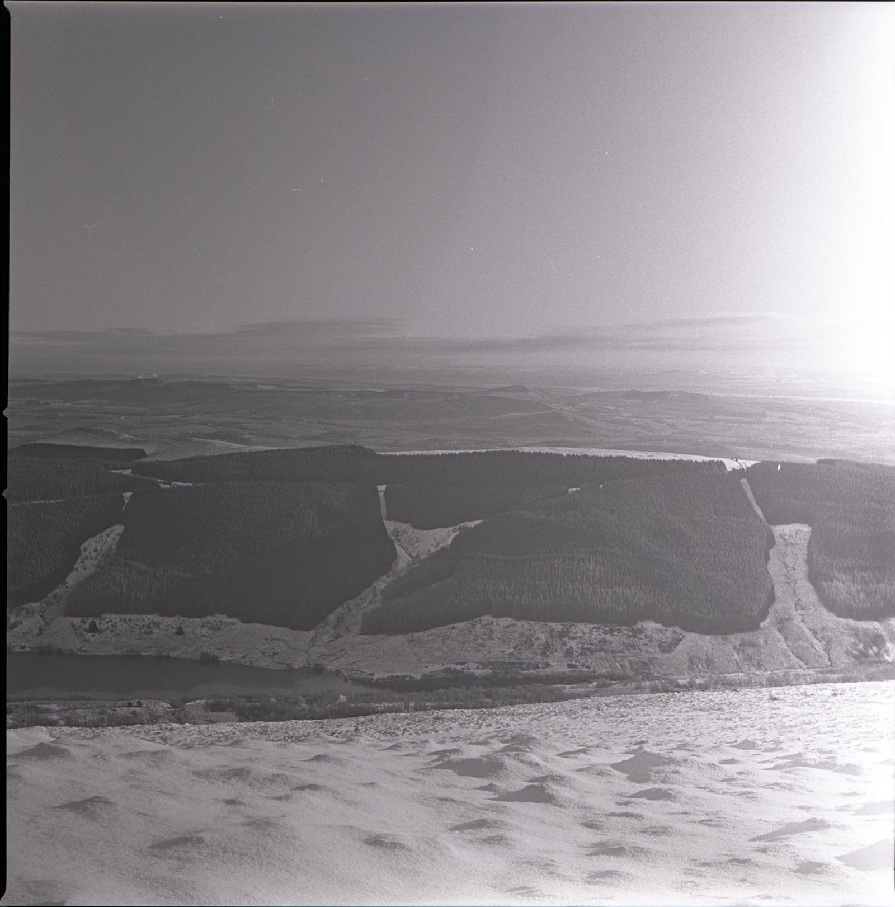
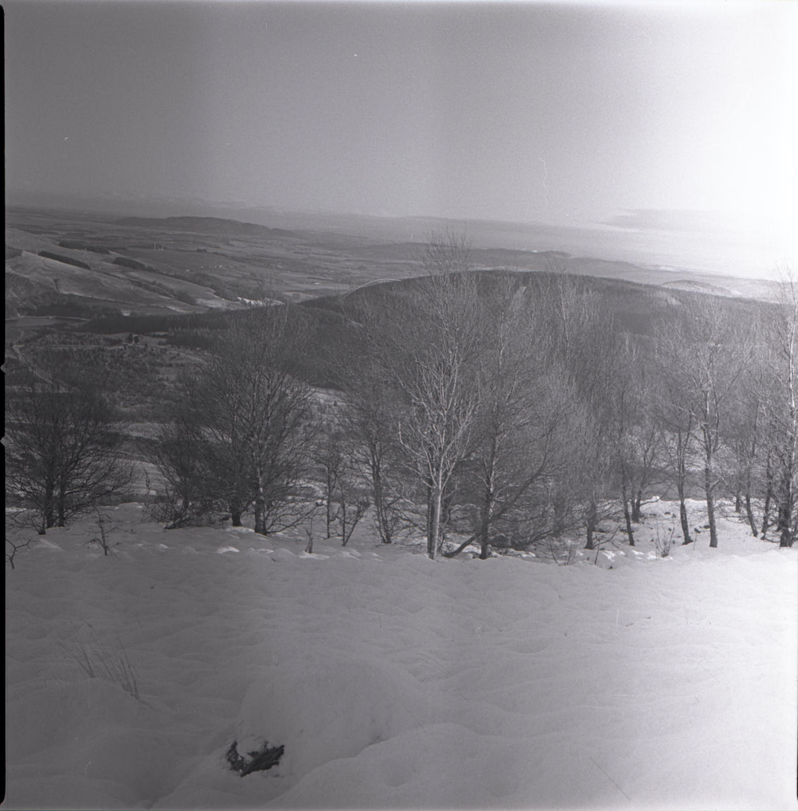
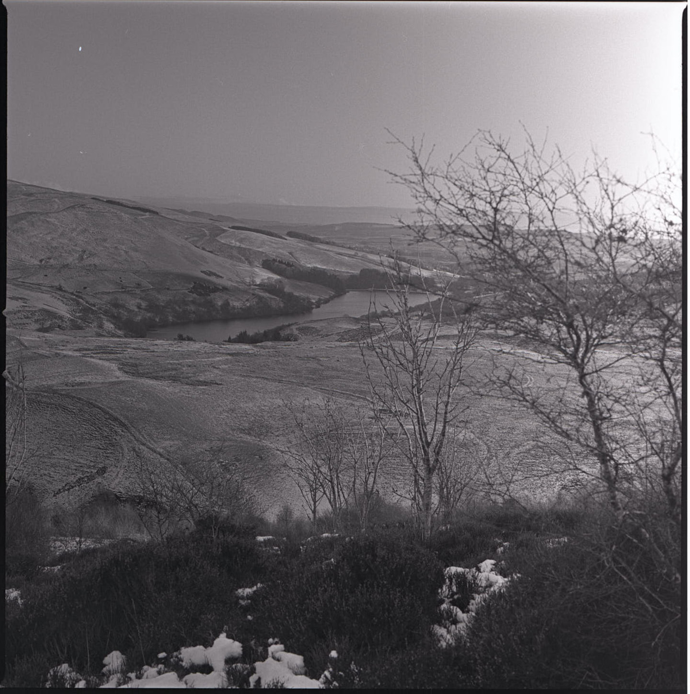
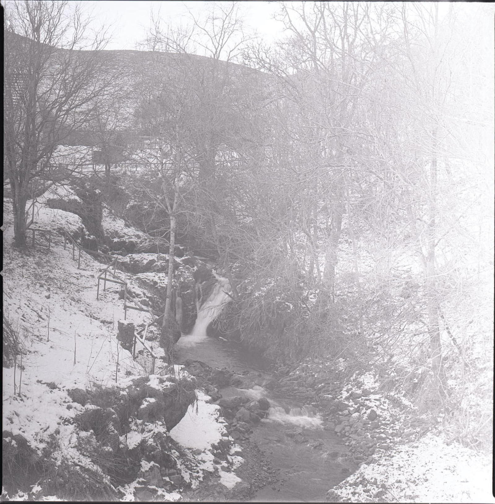
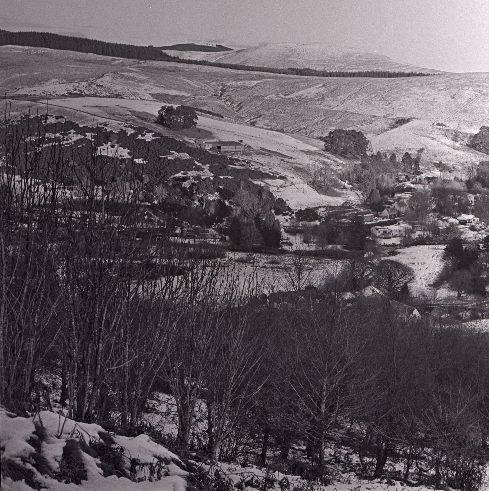

The first roll of 2021
Light leaks and lessons to be learned.

The first roll of photographs in 2021 was also a first time for me shooting Kodak Tri-X 400 film, and also the first roll through the Hasselblad 503CW I bought over Christmas. We couldn’t go to the Moon to shoot with this iconic camera, so we slogged it to the top of a local hill on a very chilly winter morning.
It was a crampon day, according to a chap we passed on the walk to Glenquey reservoir where our ascent started. He seemed confident enough on the icy path back down so we took it to be banter. As it turned out, we might have benefited from crampons as we took what turned out to be a harder route up the hill. We had poles, and wouldn’t have completed the climb without them for sure.
I “stand” processed the film in Rodinal 1:100 for 60 minutes. The film was quite curly when it dried, so I cut it into strips and put it in a book1 for half an hour before scanning. Very quickly, as I scanned, a more serious issue presented itself.
 The first image from Innerdownie Hill.
Here, we see a light leak, which comes from the left hand side of the film magazine as seen when shooting. This is disappointing, but I am assured by the very helpful and supportive community of Hasselblad film photographers that this is to be expected when buying an old camera. A proper inspection is required by people experienced in such things, and fortunately, I know of such people not far from where I live that can do that.

There is some question about whether I introduced problems during development, but I don’t think so, having used this method before without problem. If it had been a development issue, then the banding might have gone the other way (and appeared at the bottom of the frame). I am not confident I can explain the second (central vertical) stripe in the above image. There were two images on the roll with marks like this, and so there may have been something I didn’t do quite right in development. Another roll might help confirm this.

The variation in that flare on the right of each frame differs according to the shutter speed used. The longer exposures (such as the 1-second river image below) suffer with a greater effect, whereas in the short exposures (header image, 1/500s at f/22) it is less obvious.
 River, from the bridge 1 second at f/11
Am I disappointed? Well, yes, of course, but perhaps my expectations weren’t reasonable. The camera and magazine are just over 20 years old and I have no idea what kind of life they have led. The lens is over 50 years old. It should be expected to have old equipment, used or not, well cared for or not, checked over properly before it functions as it should.
There is some consolation, in that I can recover enough in post processing to render a reasonable image. It’s cheating a bit, maybe, but Ansel Adams put a lot of effort into working up his negatives into a decent print. He regarded the negative as the “score” which is interpreted in the “performance” of processing and printing. With that in mind, here is Glendevon from the walk down Innerdownie hill, digitally cropped and processed in Capture One Pro 21:

Next steps
The consensus from the Hasselblad Film Photography group on FB is to:
… try another roll of film but use conventional agitation with less dilute developer, just to rule that out. If you still have the same problems after that, then you’ve got a light leak. All the same, light leaks aren’t hard or expensive to fix2, it’s usually a matter of replacing the foam seal around the dark slide, which you can do yourself with nothing more than a set of jeweller’s screwdrivers.
As it happens, the seller has offered to have the camera returned for repair. This is the logical next step.
Lessons learned
- About the film
- On reading the Kodak data sheet for the film stock, I might have over-exposed for the conditions on the hill, which problem may have been masked by stand processing. Most of the snowscape shots were taken at f/11, 1/125s, which is over the suggested f/22, 1/500s for Bright/Hazy Sun on Light Sand or Snow. I used my Nikon FM as a meter on the hill but quite possibly this is an unreliable witness: it had a number 8 yellow filter for which I had compensated 1/3 stop but the TriX data sheet suggests 2 stops for this filter. Next time, I’ll use my digital camera for metering.
- About old cameras
- It is to be expected that older equipment needs to be maintained and looked after. If buying second hand, assume that inspection and sevice by an experienced technician is needed before you will get the best out of the investment, and budget for it.
- About stand developing
- Film manufacturers produce data sheets that are worth following until you have enough experience to vary. There are situations where stand development is a good idea: perhaps where individual frames have been pushed. Reduced grain can be had also, but it doesn’t (and shouldn’t) compensate for bad focusing.
- About taking photographs
- one or two of these images had definitely wonky horizons, and the focus wasn’t particularly good. Two basics to work on in 2021.
Notes
The images on this page were taken with the Hassleblad 503CW, Carl Zeiss 80mm F2.8 C planar lens.